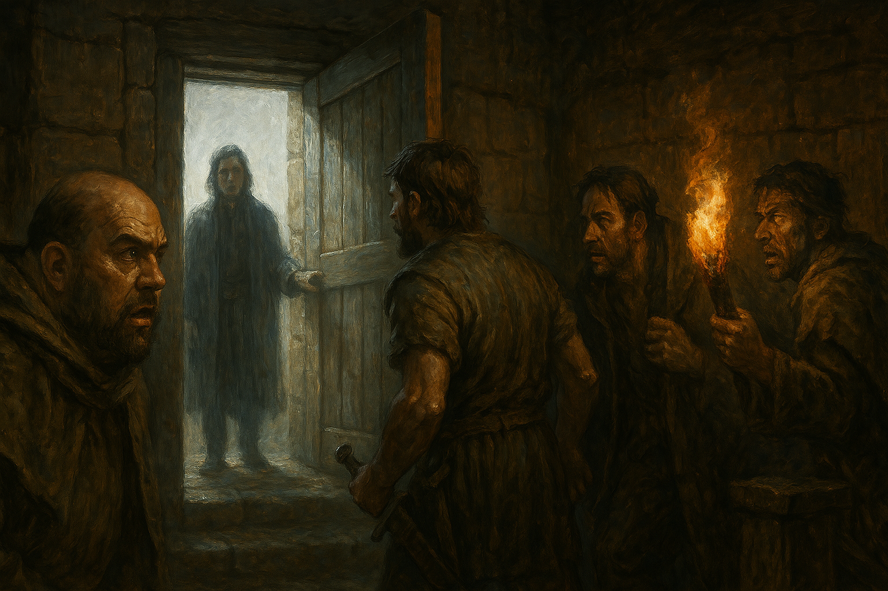

Chapter 3: Deal?
Mattington Shattered

Mattington Shattered
15048.11.16
錯愕的眾人看著 Drayer 的消失，摸不著頭緒。原本 Drayer 身邊的壯漢也露出驚詫的表情，在他的規劃中，自己也應該從這裡消失的。他趕緊轉換心情，走向冒險者們。其他惡漢們則趕緊跑到通道口，堵住冒險者們的去路。
對於冒險者們的逃脫，壯漢沒什麼意見，他唯一不願意釋放的是 Jonathan。壯漢提出了一個交易，請冒險者們到 Sebano 的鎮長家，偷取一個有魔法的正方體盒子，並拿來給他，他就會將 Jonathan 釋放。冒險者們想了想，決定先接受這個提議，接著便在惡漢們的允諾下離開了地底。
回到地面，夜色逐漸降臨，冒險者們對 Sebano 不甚熟悉，在空蕩蕩的街道上，除了民宅外幾乎沒有商業行為，連路人都少之又少。冒險者們決定回到「酒館」探一探。
酒館的正門口推不開。華生嘗試解鎖成功，卻發現似乎是門內有人堵住了門口，於是大家決定從酒館的後門進入。出乎大家的意料之外，後門沒有鎖住。大家走入後門的倉庫後，發現倉庫通往酒館內部的門也被鎖住了。華生嘗試竊聽，發現酒館內的人們似乎在慶祝些什麼，而這些人應該都是拉索斯教的信仰者。
簡單探索，倉庫的右側堆滿了大的木箱，裡面都是空的；左側則整齊的排放了幾十個精緻的小木盒，高度大約是成年男子的身高。Tweeter 發現盒子上寫了月神教使用的文字，似乎在讚頌著月神。華生拿起一個小木盒，發現有點沉重，用自己的武器嘗試撬開，「啪」的一聲，小木盒的蓋子像是彈簧般的彈開，裡面有六到十顆大小些微有差的黑色石頭，似乎一點光線都透不進去。華生、Tweeter、Paladin 和 Sugalu 各自拿了一兩顆起來端詳。Tweeter 向 Paladin 借了他從 Mr. Moon 那裡拿到的石頭，想和這些石頭作比較，卻發現深黑色的石頭似乎將 Mr. Moon 的石頭迅速吸了過來，然後 Mr. Moon 的石頭便迅速炸裂，化為粉碎，Tweeter 只好向 Paladin 連聲道歉。
倉庫通往酒館的門似乎被轉動了。一個醉醺醺的男人走了進來，拿走一盒小木盒，似乎沒有發現躲在倉庫內的冒險者們。男人走回酒館後，將門關上，但是似乎忘記鎖了。Tweeter 偷偷聽到了酒館內的人們在討論這些石頭，似乎是要拿來建置什麼裝置的，而且十分稀有。華生嘗試帶走最大數量的小木盒，不過因為小木盒很重，最終只拿走了三盒。因為這些石頭是拉索斯教的信徒需要的，因此他想要將他們都摧毀。
因為覺得倉庫就在酒館的正後方，並不安全，冒險者們決定冒雨離開，準備往鎮長的家前進。依照壯漢的說明，繼續往前走，前方有座富麗堂皇的房子，那便是鎮長的家。路途中，華生找到了路旁的小水溝，便一口氣將他帶出來的深黑色石頭全部倒進去，只留下一顆自己保存。
距離鎮長的家越近，雨就變得越小，然後冒險者們看見了煙出現在鎮長家的後方。華生偽裝成一名老頭，希望自己的外貌不會讓鎮長的起疑。敲了敲門，冒險者們和應門的僕人告知房子後方可能失火了。僕人們趕緊提了水桶，開始救火，冒險者們也跟到了房子後方，發現縱火犯似乎是個與 Beau 年齡相仿的小男孩。Paladin 前去協助打火，一名僕人帶著鎮長來到了現場。鎮長拄著拐杖，眼神痛惡的看著小男孩，要用拐杖打小男孩的屁股。然而，小男孩身手矯健，一把抓走了鎮長的拐杖，鎮長氣的不得了。冒險者們紛紛與小男孩打了起來，而受了重傷的小男孩則利用法術逃脫到了鎮長家的頂樓，並將拐杖丟了下來，砸中了其中一名僕人，僕人就地昏迷。
經過了交涉，受傷的小男孩決定屈服，於是從頂樓跳了下來，但也陷入了昏迷。在簡單救治後，小男孩終於甦醒，火也撲滅的差不多了。鎮長面色不悅的帶著僕人與冒險者們從正門進到屋內。小男孩向鎮長喊冤，表示自己只是想要進來住，但是在後門敲門發現沒有回應，只好放火燒了。Sugalu 聽了後代替鎮長打了小男孩的屁股。
鎮長無奈地向冒險者們表示作為感謝，他應該拿點什麼東西給他們，然後便拿了一個裝著金幣的小布袋，遞給了 Tweeter，然後傳到 Paladin 的手中。Paladin 也和鎮長請求讓大家在他的家中住一晚。經過分配，小男孩和 Tweeter 住一間，偽裝成老頭的華生表示要「採陰補陽」，和 Sugalu 睡一間，而 Paladin 則獨自睡一間。擁有魔法能力的小男孩似乎感受到了鎮長房子內有個魔法力很強的東西，便試圖向鎮長詢問，但鎮長不願意透露更多。
睡前，Paladin 找了華生與 Sugalu，討論是否要在今夜開始行動，尋找壯漢要他們奪取的魔法盒。華生和 Sugalu 表示先不要輕舉妄動，先安然度過今夜，好好休息再說。而在 Paladin 離開後，華生向僕人要了點東西吃，拿到了一點麵包，作為晚餐。
15048.11.17
當晚，眾人都睡得香甜，唯獨 Sugalu，在他的夢中，隱約感覺到 Sebano 除了拉索斯教以外，似乎還有更龐大的威脅。一早，Sugalu 便和他的夥伴們討論起這件事。
華生分派了自己的老鼠到鎮長家的二樓去，想尋找魔法盒子的位置，卻沒有找到，於是先躲在貴重倉庫的門後待命。不久後，Tweeter 召喚的夸賽魔也尋找到了老鼠的蹤跡，一同行動。
在冒險者們討論的過程中，鎮長家的僕人前來打了聲招呼，為他們準備了麵包作為早點。一陣子後，鎮長也來到了房間。眾人決議要拿走壯漢要求的魔法盒子，但是自己帶走，不拿去和壯漢交易。隨後，冒險者們便和鎮長提起了關於傳聞中的魔法盒子一事。
鎮長嘆了口氣，詢問眾人是否就是為了這個盒子而來，也問了大家是不是 Hobb 派來的，大家也才知道那位壯漢的名字叫 Hobb。鎮長表示稍晚可以給大家看看這個盒子，也許可以做個交易，把這個盒子換給冒險者們。同時，鎮長也和新任的爵士 Paladin 表示，有一些關於王國的事，想和他說一下。
此時，一名年輕的女子從鎮長身旁出現。他打了聲招呼，表示自己是鎮長太太，名叫 Anna，外表年齡目測大約二十初頭，與年邁的鎮長相比，明顯年輕許多。此時，鎮長也才發現自己尚未向冒險者們自我介紹，他表示自己的名字叫 Thorne。
Anna 表示自己要去鎮上買點東西，稍晚回來，便和各位道別，鎮長便帶 Paladin 先到樓上的辦公室去。華生的老鼠和 Tweeter 的夸賽魔也一同躲到了鎮長辦公桌底下竊聽。辦公室內，Paladin 花了不少時間，和 Thorne 鎮長說明了自從冒險以來的種種事蹟，接著便向鎮長詢問關於 Sebano 附近城鎮的狀況。鎮長也和 Paladin 說明了昨晚得知的消息：麥丁頓王國的國王巴納沃二世決定退位，傳承給他的兒子艾略特四世（Elliot IV）。
談話結束後，鎮長便讓 Paladin 回到一樓，把夥伴們帶上來。眾人在鎮長辦公室的門口討論著接下來該怎麼做，碰巧外出購物的 Anna 剛好回來，便幫大家推開了門。鎮長拿出了神秘的盒子：一個用玻璃罩子罩住，底下是木頭基底的外殼，裡面則是一個漂浮在空中，七彩奪目的正方體盒子。木頭底座下刻有一些文字，在 Tweeter 的解讀下，得知是月神教的語言，說明這個物體有著傳送的功能。
大家詢問 Thorne 鎮長怎麼會有這個寶物，鎮長表示這是他過去月神教的朋友留下來的遺物。這位朋友，Sharman 曾是月神教的高僧，因為發現了他不可透露的某個關於月神教的秘密，便偷走了這個寶物，逃亡到了 Thorne 的家裡，將寶物交給他藏好。不久後，Sharman 便被刺殺了。
Tweeter 的腦中不斷響起一個熟悉的聲音，重複喊著「Take it」。在聲音的蠱惑下，Tweeter 伸手就要將寶物拿走，但在鎮長急速的保護下，保住了寶物。他趕緊將寶物收回身後的櫃子，以及喝斥 Tweeter。Tweeter 只好先退到了房子的角落去。
Inu 不斷詢問關於這個寶物的事，也一直要求想要觸碰剛才差點被 Tweeter 拿走的寶物，卻屢屢遭到鎮長忽視，甚至讓鎮長感到不悅，因此鎮長請 Paladin 到隔壁臥室將鎮長夫人帶來，請鎮長夫人將 Inu 先帶到臥室休息。Inu 感到不悅，最終在華生的陪伴下，與鎮長夫人三人一起先到臥室休息。
在 Sharman 將寶物交給 Thorne 後，至今已經過了有二三十年，但 Thorne 仍然不知道寶物真正的用途，只知道自己要保護好它。經過 Paladin 和 Sugalu 的協調後，鎮長終於心軟，決定讓冒險者們將寶物的外殼打開，先檢視檢視，進行研究。
鎮長臥室內，Anna、華生與 Inu 閒聊著。Inu 想對 Anna 施展魔法魅惑他，卻發現不但沒有成功，還反被 Anna 魅惑了。Anna 詢問了 Inu 為何要來這裡，卻也得不到什麼答案。不過，在談話間，華生與 Inu 也才發現 Anna 其實不是人類，而是隻妖精。不久後，Anna 將耳朵貼在鎮長辦公室側的牆壁，試著竊聽隔壁發生的事。華生與 Inu 照做，發現這堵牆似乎比他們想的還要薄，隔壁的聲音聽得一清二楚，像是沒有隔間似的。三人聽見了隔壁傳來了滋滋聲，Anna 微微一笑，表示好戲就要上場了。
鎮長辦公室內，Thorne 再次將寶物拿出，放在桌上。Tweeter 故作鎮定，試著抵擋腦中不斷傳來的笑聲。他輕輕將玻璃罩子提起，周圍傳出了滋滋巨響，奪目的白光照滿整個房間，所有人都像瞎了一般，什麼也看不見。Tweeter 漸漸將罩子提高，同時命令自己的夸賽魔將此刻露出在外的魔法盒子取走。在 Tweeter 伸手向後將門打開，讓夸賽魔逃出後，他便故作鎮定的握著空無一物的玻璃罩子。房間內的光線恢復正常，留下震驚的鎮長，看著如今什麼都沒有的空殼子。
此時，在 Anna 的帶領下，華生和 Inu 都回到了鎮長辦公室門口。Anna 快速地調整了自己的表情，以一種刻意的慌張的表情跑入了辦公室內，故作焦急地問鎮長發生了什麼事？鎮長沮喪地趴在了桌上，喊著「怎麼會沒了？」。Tweeter 表示，也許是寶物的能量在玻璃照打開後消散了，整個消失了。鎮長意志消沉，將所有人都趕出了他的辦公室外。
Anna 帶著冒險者們先到了一樓。在與 Anna 道歉後，冒險者們決定先行離開，再考慮下一步該怎麼走，畢竟沒了寶物，他們現在也無法去找 Hobb 談交易。遠離了鎮長家一段時間，華生回頭想檢查有沒有人跟蹤大家，卻發現 Anna 在二樓的窗戶口遠遠看著大家離去，露出了詭譎的笑容，揮揮手和他們道別。冒險者們趕緊繼續向前行。
在 Tweeter 的解釋下，大家才了解，剛才在魔法盒子發出強光後，Tweeter 吩咐他的夸賽魔將盒子帶出鎮長家外，幻化出翅膀，將魔法盒子帶到附近的森林旁，挖了個小洞，埋了進去，並在洞口守候。
眾人決定到 Tweeter 藏匿魔法盒子的位置，將盒子挖出來。Tweeter 腦中的聲音開心的笑了出來，並向 Tweeter 表示「你知道怎麼用它」。Tweeter 回想，過去有在荒郊野外見過類似的漂浮盒子，不過並未發光到這麼刺眼。經過摸索後，Tweeter 發現小小的盒子內部空間似乎大到難以置信，他才發現這個盒子內部似乎是個次元洞。伸手進去，Tweeter 掏出了數顆深黑色的石頭，與之前在 Hobb 的倉庫發現的石頭十分相似。拿出了之前收起的幾顆石頭，他發現石頭似乎很快速地吸到了盒子上。最後，Tweeter 決定先把盒子收到包包內保存。
冒險者們討論著下一步，決定先回麥克嵩去。然而，要回到麥克嵩，勢必要走回 Sebano 的大街上。冒著被 Hobb 的黨羽看見的風險，冒險者們小心翼翼的走回了大街。Sugalu 將背後的帽兜戴上，華生偽裝成一名小女孩，與 Inu 一人一手牽著 Sugalu。Paladin 與 Tweeter 則分別走在隊伍的最前與最後，隨時注意周圍的狀況。
遠處，Paladin 看見兩名貌似 Hobb 的手下從遠處走來。仔細竊聽，他們似乎討論著等到魔法盒子到手後，便可開始蓋裝置，但是大約要花一個月的時間才能完工。其中一名混混看見化作小女孩的華生，便蹲下來，似乎想要調戲他，華生趁機攻擊他。見到華生偷襲，Inu 也展開了攻勢，後方的 Tweeter 也加入戰局。沒幾下攻擊，兩名惡徒便倒地。華生將其中一名化成了殭屍，走在隊伍的最後方，護送大家。
走回了接近 Hobb 的領地，街道上的人越來越多。幾名看起來像是 Hobb 手下的人看見了走在隊伍最後面的「夥伴」，紛紛走向前去，而冒險者們則裝作什麼都沒看見。華生為了引開惡徒的注意力，讓跟在最後的殭屍折返，而惡徒們似乎發現了什麼不對勁，推倒了殭屍，便從後方追了上來，抓住了 Tweeter 的肩膀。
看見了 Tweeter 被惡徒們控制住，華生趕緊朝惡徒們的方向製造了魔法黑暗。同時，冒險者們圍繞著黑暗，等待從裡頭跑出的惡徒們，想趁機攻擊他們。他們聽見了黑暗中傳來了刀子砍殺的聲音，同時外頭也有一群看起來也像 Hobb 的黨羽的人，紛紛走入黑暗中。不久後，這群人從黑暗中將人們紛紛扛了出來，其中也包含了昏迷中的 Tweeter。黑暗範圍外的冒險者們也不敢下手。
悄悄關注著這群人的動靜，冒險者們看見他們紛紛走回 Hobb 的酒館，於是他們便在酒館的門關上後，到對街從遠處觀察，並討論下一步怎麼走。首先，華生讓他的老鼠潛入酒館內，看見了惡徒們都坐在酒館內討論著，Hobb 和被他壓制的 Jonathan 在吧檯內。接著，華生 讓老鼠跑到了往後門的門鎖上，施放了魔法鎖，不過在接觸到鎖的那一刻，老鼠感受到了一種不舒適的黏糊感。
門外，冒險者們決定用火球朝著酒館門口丟擲。然而，在 Inu 出手後，卻發現火球在碰到木門幾秒後，竟然消散了。這時，冒險者們才發現酒館的門和旁邊的牆，外面竟然有種黏膩感。然後們悄悄地打開了。